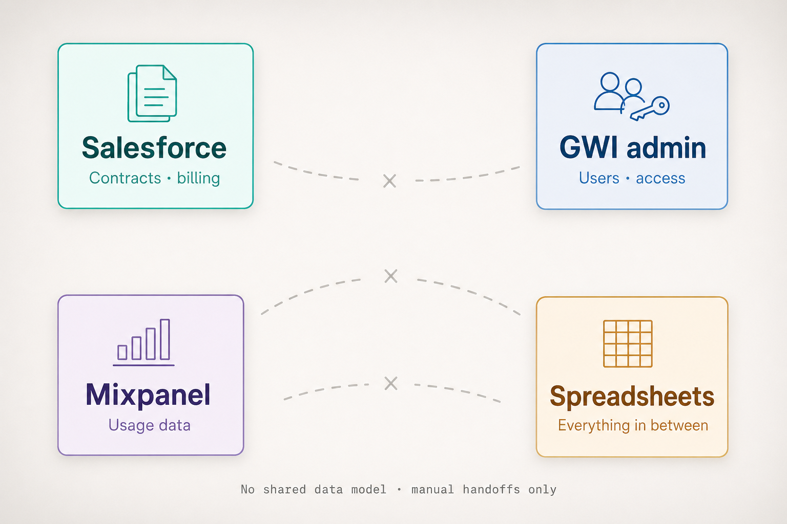

Global Web Index.
GWI is a scale-up providing human data insights, increasingly serving complex enterprise clients such as Meta, Amazon, and Omnicom.
As the business began shifting towards AI-powered SaaS products, I joined to help shape the foundations of a self-serve experience.
During the work priorities evolved, leading to a pivot towards delivering an Agentic Alpha product, which is still in progress.

Impact snapshot
Admin isn’t just a tool
Admin isn’t just a tool: it’s the operating system of our business. It controls who can access the platform, what they can see, what they’re paying for, and how we track value.
On the surface everything works, but underneath it only works because we make it work.
It had been built across multiple codebases and hacked together over time, so there was no single, coherent foundation to design against.

Current Organisations management in GWI Admin: the operational surface before hierarchy and access foundations were prioritised.
Before designing anything, the priority was to create clarity.
Building a shared understanding
This was long overdue discovery: we needed a grounded picture of how users and the business actually operated before we could shape Admin with confidence. I led that work across multiple teams.
Discovery artefacts

Stakeholder mapping
Who owned which workflows, who needed to be involved and who needed to be informed.

Proto-persona workshop
Lightweight profiles to give us direction on information to validate with users.

Interviews
13 interviews across RevOps, Enterprise CS, Product, Engineering, AI, and Legal.

Service mapping
How work moved between systems and owners.
“A lot of it lives in our heads.”
Mapping a fragmented ecosystem
The tool landscape didn’t line up as one system, which set the stage for what discovery surfaced next.

Four silos with empty space between; no integration, only manual handoffs.
Uncovering gaps across systems, structure, and process
No single source of truth
Systems didn’t connect. Data was spread across Salesforce, Asana, Intercom, admin tools, and analytics platforms. Much of the operational logic lived in spreadsheets.
Not reflective of enterprise reality
Enterprise clients had complex organisational structures and hierarchies, but access was managed through fragmented workarounds, such as duplicating organisations.
Manual and invisible processes
Customer lifecycle and access rules were inconsistent, undocumented, and reliant on human memory, which created risk and inefficiency.
Operational and commercial consequences
This wasn’t just a UX issue. It had clear operational and commercial impact:
- Significant manual effort managing users and access
- High risk of over-provisioning and data exposure
- Inconsistent customer experience across enterprise clients
- Misalignment between product capability and enterprise needs
Where the cost showed up in the business.
- ~500 Hours spent on admin support in six months
- £36m Commercial records where misalignment or invisibility across systems created exposure
- 100% Reliance on internal teams for user management changes before self-serve
Making complexity visible to drive alignment
To align the business, I translated these findings into a clear system narrative. This helped:
- Make complexity visible
- Quantify impact
- Align stakeholders across teams
Outcome: → Influenced roadmap direction, including prioritising organisational hierarchy and access foundations.
Swipe or scroll

The Product Experience story
Framing the workload of employees in a way that is tangible.

Enterprise client story
Highlighting the complexity of our Enterprise clients' structures.
Stakeholder-facing visuals
Defining core entities and relationships (OOUX)
Before moving into interface design, I led cross-functional Object-Oriented UX workshops to define:
- Core entities (users, organisations, access)
- Relationships between systems
- A scalable structure for self-serve
Aligning teams on how the system should work before deciding how it should look.

Object model or relationship sketch.
Imagining the future of admin
I used the outputs of our OOUX work to shape a future direction for what the admin platform could be: a coherent set of capabilities leadership and teams could align around before we moved into detailed interface design.
- Parent–child hierarchy — a clear roll-up view of accounts
- A way to view and manage seat capacity
- An overview of users and access within organisations
- A way to track subscriptions to spot opportunities for engagement and reduce churn
Future admin system
Adapting to a faster path to Agentic Alpha
As discovery progressed, the business shifted focus towards launching an Agentic Alpha product within ~two months, including self-serve functionality.
It wasn’t feasible to resolve all foundational challenges in that timeframe.
Balancing long-term structure with short-term delivery
With a tight timeline, we couldn’t solve the underlying system challenges in full. Working closely with Product and Engineering, we focused on what could be delivered for Alpha, drawing a clear line between in-scope work and longer-term bets.
In scope
- Self-serve for the new product
- Role-based access
- User access management
- API / MCP usage and metering
Out of scope
- Full system redesign
- Enterprise-grade organisational modelling
- Backend-heavy dependencies
Shaping a practical, constrained experience
I mapped out end-to-end flows and edge cases so we could see how self-serve would behave in practice before locking the interface.
.png)
Thinking through admin role edits
Every organisation must keep at least one admin. I worked through individual and bulk role changes so validation, disabled actions, and error copy appeared before anyone could accidentally remove the last administrator.
Individual role change


Bulk role change


Design iterations
Before / after snapshots from modelling and interface work, showing how artefacts tightened as constraints became clear.

Earlier pattern: a Status column plus inline Change role and Remove on every row, built as one-off table rows instead of a shared grid component. Busy, and hard to extend.

Removed Status once we agreed it was unclear and not feasible to own in the product. Moved CTAs into the row actions menu so the table stays scannable and sensitive changes carry a bit more friction. Under the hood: React Table for faster delivery and flexibility.

One screen paired quota progress and reset timing with token copy blocks so admins could sanity-check consumption and grab secrets in a single stop.

Shifted the top of the experience toward rollup KPIs and an API versus MCP timeline so leadership and admins see trajectory and split before diving into credential management.
Working collaboratively from design to code
To accelerate delivery and alignment, we worked in a hands-on, collaborative build process with developers, shipping increments from the same vocabulary as design, rather than tossing specs over the wall.
How we operated
- Tooling Cursor + Figma Make MCP
- Source Shared repo
- Rituals User stories refined together
- Speed Prototyped directly in Cursor
- Integration Pushed to a shared repository
Manage users (Cloudinary-hosted prototype demo).
API metering (Cloudinary-hosted prototype demo).
Using AI to move faster
AI tools were used to support speed and understanding:
- Rovo AI (Atlassian) To uncover buried engineering decisions
- Secoda AI To understand gaps between systems and business costs
- ChatGPT Create an agent to store research artefacts and synthesise findings
- Figma Make Quick ideation and concepts
- Cursor To build prototypes with Figma MCP and push to repo
Alongside those tools, I developed a staging design system as the base for a future product-wide rollout, so we could move fast prototyping with AI while keeping tokens and components coherent enough to scale.

Tokens · variants · components
Establishing a foundation for scalable self-serve
- Turned a fragmented system into a shared, actionable model
- Shifted roadmap towards access and organisational structure
- Assessed tools like WorkOS to balance speed vs flexibility
- Established the foundations for scalable self-serve
- Shipped a working Alpha to bring the approach to life
Designing systems, not just interfaces
This project went beyond designing screens. It focused on:
- Creating clarity in a complex system
- Balancing long-term architecture with short-term delivery
- Aligning teams with different priorities
The work is ongoing, but it established a strong foundation for scaling GWI’s platform.